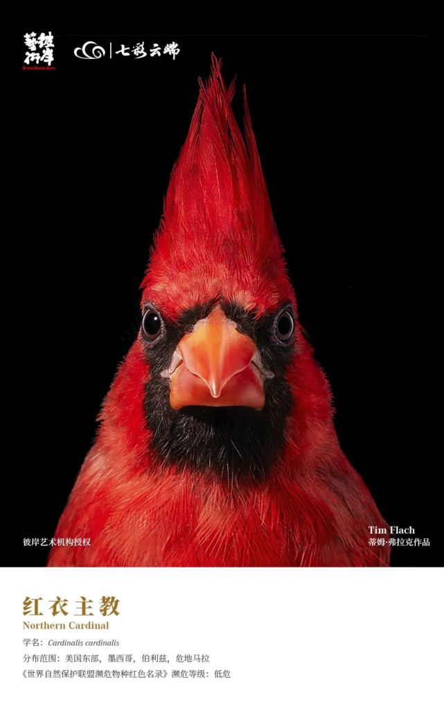
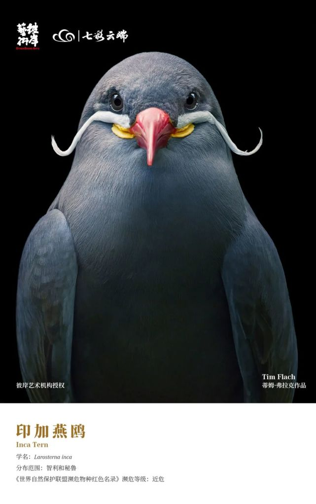
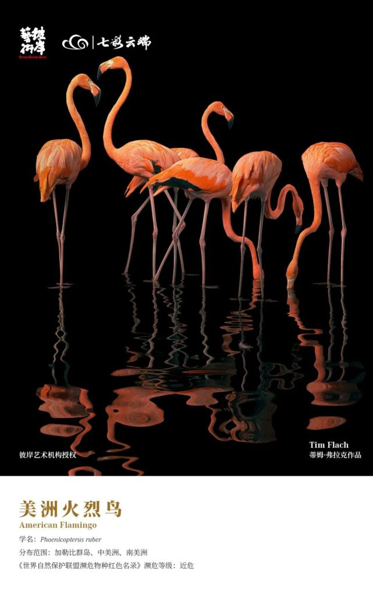
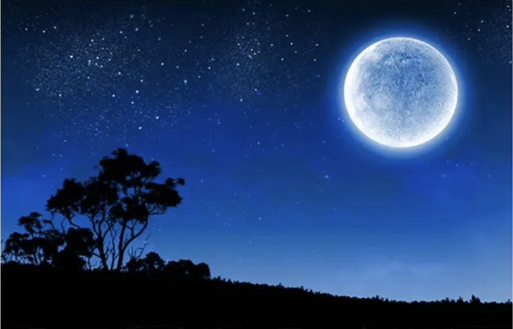

如果生活中有什么使你感到快乐，那就去做吧
不要管别人说什么
鸟
The sunset glow tinted the sky red.
鸟2
The sunset glow tinted the sky red.
鸟3
The sunset glow tinted the sky red.
  
增加灰效果，整个网页就直接html上
fantastic

Such a joyful night!